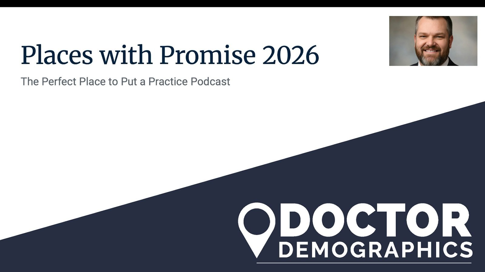

Places with Promise 2026

Podcast Transcript:
Places with Promise for 2026
Welcome to The Perfect Place to Put a Practice! I’m your host, Mike Green, from Doctor Demographics. Today, we’re exploring "Places with Promise for 2026", the mid- and large-sized markets across the U.S. that are primed for success if you’re opening or expanding a dental, veterinary, or optometry practice. These spots boast strong population growth, robust economic outlooks, and business-friendly local governments that make it easier to thrive. Whether you’re eyeing a bustling city or a growing metro area, we’ll break down why these locations stand out for 2026. Grab your notebook, because this could be the episode that helps you pinpoint your next big move.
First off, a huge thank you to all our listeners for your incredible support over more than 300 episodes. Your feedback and shares keep us going, and it’s an honor to help you navigate the world of practice placement and growth.
For those in the dental field, if you’re looking to level up your marketing game, check out my book Dental Marketing Mastery, available on Amazon in paperback and Kindle. It’s packed with practical strategies drawn from years of helping practices like yours succeed.
Alright, let’s get into it. As we look ahead to 2026, the U.S. is seeing uneven recovery and growth post-pandemic, with some areas surging ahead thanks to migration trends, job creation, and pro-business policies. We’re focusing on mid-sized markets (populations around 500,000 to 2 million) and large markets (over 2 million) that combine population booms, driven by domestic migration, remote work, and affordability, with economic vitality in sectors like tech, healthcare, and manufacturing. Plus, these spots have local governments that roll out the red carpet for small businesses, with low taxes, streamlined regulations, and incentives like tax credits or grants for healthcare providers.
Our criteria? We drew from recent data from sources like the U.S. Census Bureau, Moody’s Analytics economic forecasts, and the Tax Foundation’s business climate rankings. Population growth projections for 2026 show these areas adding 1-3% annually, outpacing the national average. Economic outlooks predict GDP growth of 2.5-4%, fueled by job gains in healthcare (up 15-20% in these markets since 2022). And favorable governments? Think no state income tax in some, fast permitting processes, and programs targeting underserved health areas. We’ll count down our top five, starting from number five, with tips on why they’re ideal for your practice.
Out Top Five Places With Promise for 2026
Number five: Boise, Idaho, a mid-sized market that’s exploding with promise. Boise’s metro area, home to about 800,000 people, is projected to grow by 2.5% in 2026, thanks to influxes from California and the Pacific Northwest seeking affordability. The economy is booming with a forecasted 3.2% GDP increase, driven by tech firms like Micron and a surging healthcare sector, Boise added over 5,000 healthcare jobs in 2024 alone. Local government is incredibly business-friendly: Idaho ranks in the top 10 for business climate per the Tax Foundation, with low property taxes (around 0.6% effective rate) and incentives like the Idaho Rebound Grant for small businesses. For practices, this means lower overhead and high demand, Boise has a shortage of dentists and vets, with only 1.2 providers per 1,000 residents in some specialties. The population skews young and active, with 25% under 18, creating opportunities for pediatric dentistry or family vet care. Focus on suburbs like Meridian for new developments, and tap into the outdoor lifestyle with marketing around preventive health for active families. If you’re tired of high-cost coastal living, Boise offers a fresh start with room to grow.
At number four: Charlotte, North Carolina, a large market that’s a powerhouse for Southern growth. Charlotte’s metro population tops 2.8 million and is set to expand by 1.8% in 2026, fueled by corporate relocations from banking giants like Bank of America and a wave of young professionals. Economic outlook? Stellar, with 3.5% GDP growth projected, including a 18% rise in healthcare employment since 2023. North Carolina’s government is pro-business, ranking 2nd in CNBC’s 2025 top states for business, thanks to low corporate taxes (2.5% flat rate) and programs like the Job Development Investment Grant, which has funneled millions into healthcare expansions. Local incentives in Charlotte include property tax abatements for new practices in growth zones. This market is perfect for optometrists and vets, with an aging boomer population (20% over 65) driving demand for vision care and pet wellness. The diverse demographics, 40% non-White, with growing Hispanic and Asian communities, mean multilingual services can set you apart. Target areas like Ballantyne or University City for affluent patients, and partner with local employers for corporate wellness tie-ins. Charlotte’s blend of urban energy and suburban space makes it a smart bet for scaling up.
Coming in at number three: Nashville, Tennessee, a vibrant mid-sized market that’s music to your ears if you’re practice-building. Nashville’s metro area, with 2.1 million residents, is on track for 2.1% population growth in 2026, drawing millennials and families from the Midwest and Northeast with its no-state-income-tax appeal. The economy is rocking, with 3.8% GDP growth expected, boosted by healthcare hubs like Vanderbilt University Medical Center and a tourism boom adding 14 million visitors annually. Tennessee ranks top 5 in business friendliness per Forbes, with low sales taxes on services (7%) and grants via the Tennessee Department of Economic Development for rural health practices. Nashville’s local government offers fast-track permitting, often under 30 days for commercial builds, and incentives for underserved areas. Demand is high for dental and vet services, with Nashville facing a 15% shortfall in providers amid a pet ownership surge (65% of households). The young, creative population (median age 36) favors cosmetic dentistry and holistic pet care. Look at suburbs like Franklin or Murfreesboro for lower competition, and market through music festivals or social media to reach health-conscious Nashvillians. This city’s energy could turn your practice into a hit.
Number two: Austin, Texas, a large market that’s leading the tech-meets-health revolution. Austin’s metro population of 2.4 million is projected to swell by 2.8% in 2026, thanks to tech migrations from Silicon Valley and remote workers flocking to its affordability. Economic forecasts show 4% GDP growth, with healthcare jobs up 22% since 2022, anchored by expansions at Dell Medical School. Texas is a business haven, no state income tax, low regulations (ranked #1 by Chief Executive Magazine in 2025), and local incentives like Austin’s Economic Development Corporation grants for small healthcare businesses. Property taxes are reasonable (1.8% average), and permitting is streamlined for practices in growth corridors. Austin’s diverse, educated crowd (45% with bachelor’s degrees) demands innovative services like tele-vet or advanced optometry, with high pet adoption rates and a focus on wellness. The Hispanic population (35%) offers niches for bilingual care. Zero in on areas like Round Rock or Cedar Park for family-oriented growth, and leverage SXSW or tech networks for referrals. Austin’s innovative vibe makes it ideal for forward-thinking practices.
And our number one place with promise for 2026: Orlando, Florida, a large market that’s magical for practice owners. Orlando’s metro area, with 2.7 million people, leads with 3% projected population growth, driven by retirees, families, and international migrants. The economic outlook is sunny, with 3.7% GDP increase fueled by tourism (75 million visitors yearly) and healthcare expansions at AdventHealth. Florida’s government is ultra-friendly, no income tax, low corporate rates (5.5%), and incentives like the Florida Health Care Innovation Grant for new practices. Orlando’s local policies include expedited zoning for medical offices and tax credits in enterprise zones. This creates huge demand: Orlando has a vet shortage amid rising pet tourism, and optometry booms with an aging population (18% over 65). Diverse demographics (30% Hispanic, 20% Black) support multicultural services. Target suburbs like Lake Nona or Winter Garden for biotech ties and family influxes. Market via theme parks or events for instant visibility. Orlando’s growth trajectory makes it the top spot to build a thriving practice.
There you have it, our top five places with promise for 2026: Orlando for its dynamic appeal, Austin for innovation, Nashville for creativity, Charlotte for stability, and Boise for affordability. These markets aren’t just growing; they’re designed to help practices like yours succeed with supportive governments and eager patient bases. Remember, the best spot depends on your specialty, dentists might lean toward family-heavy areas like Charlotte, while vets thrive in pet-loving Nashville.
If this sparked ideas, head to doctordemographics.com for a consultation. We’ll crunch the numbers for your specific needs. Thanks for joining me on The Perfect Place to Put a Practice. Subscribe, review, and share, we’ll see you next time!
Mike Green
Coming from a marketing background, demographics and psychographics are the foundation that all successful practice strategies are built. Knowing how to use that data in the implementation process of a practice is the difference between an average (or failing) practice and a successful practice in the same area. We've done thousands of studies over the years and have helped doctors find, establish, and market in nearly every state and situation.